Part A uses a pretrained text-to-image flow model, PixNerd-XXL-P16-T2I, which generates 512 × 512 images, and trains nothing. It starts with what the model sees during training and what a single prediction can do, builds an Euler sampler out of that, adds classifier-free guidance, and then uses the same sampler to edit photos and drawings and to make images that change when you turn them or step back. Part B builds the same idea at a small scale: a UNet trained from scratch on MNIST, first as a one-step denoiser, then as a flow matching model conditioned on time and on the digit class.
Both parts use one convention. Time runs from Gaussian noise at t = 0 to a clean image at t = 1, along a straight line, and the network predicts the velocity of that line:
To generate, the model starts from noise at t = 0 and follows its own velocity field to t = 1. Each training pair is a straight path, but the learned field bends, because the predicted direction depends on where you are. So sampling integrates it in small steps.
The Part B results are in. Part A is being re-run, so its figures show a hatched “result pending” box and its notes are marked as pending until the new results are added.
01 · Part A 1.1
Noisy training inputs
For Sections 1.1 to 1.5 I used my own photo of Pixar Pier at Disney California Adventure, taken at dusk, instead of the Campanile. It has detail at every scale: the thin spokes of the Ferris wheel, Mickey's face at its centre, the lattice of the roller coaster, and lamps, people and tables in the foreground. That makes it easy to see what each method keeps and what it smears. The supplied preprocessing centre-crops it to a square, resizes it to 512 × 512 and maps RGB to [−1, 1].
Fig. 01 · The photo used for Sections 1.1 to 1.5
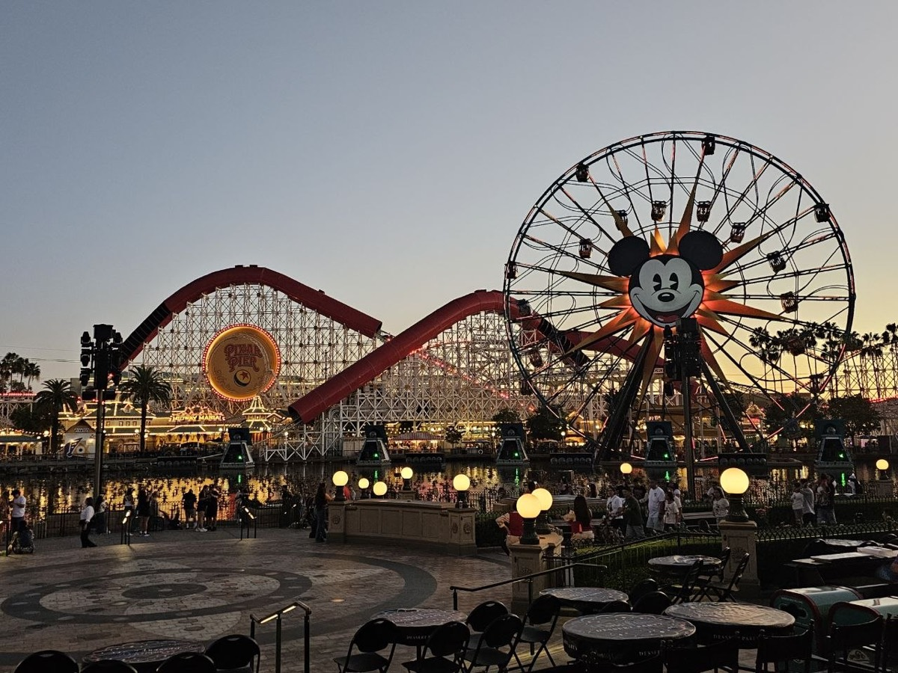
A training input is a point on the line between noise and the image:
This is more than adding noise: the image is scaled down by t as well, so at t = 0.25 a quarter of the photo sits under three quarters of the noise. I wrote interpolate exactly in this form rather than as ε + t(x₁ − ε), so both endpoints come out exact in floating point, and the notebook asserts that t = 0 returns the noise and t = 1 the image. I drew one noise tensor (seed 180) and reused it at all three times, then saved the image, the noise and the three noisy inputs for Sections 1.2 to 1.5.
Fig. 02 · The forward process with one noise sample

02 · Part A 1.2, 1.3
Blur and one-step denoising
1.2 Classical denoising
The baseline uses no model at all. The image in x_t is scaled by t, so I first divide by t to restore its amplitude, then blur:
Dividing by t scales the noise up too. Relative to the image, the noise is three times as strong at t = 0.25, equal at 0.50 and a third as strong at 0.75. For each input I tried σ = 1, 2, 4, 8 and 16 (kernel size 6σ + 1) and kept the one with the lowest mean squared error to the clean photo. That is the best case for blur, since a real denoiser would not have the clean image to compare against. The chosen σ is printed above each result.
Fig. 03 · Noisy input and the best Gaussian blur


Which σ the sweep picked at each t, and what the blur keeps and loses.
1.3 One-step denoising
The flow model predicts the velocity at x_t. If that velocity stayed constant, one jump of length 1 − t would land on the clean image:
The prediction is a velocity, not noise, so it is added, not subtracted. The model is text-conditioned, so c is the embedding of “a high quality photo”. Before using it, the notebook checks that the velocity has the same shape, dtype and device as the input and contains no NaNs.
def interpolate(image, noise, t):
# x_t = (1 - t) * eps + t * x_1, in this form so t=0 and t=1 are exact
return (1 - t) * noise + t * image
def one_step_denoise(x, t, condition, predict_velocity):
# x_1_hat = x_t + (1 - t) * v(x_t, t, c)
return x + (1 - t) * predict_velocity(x, t, condition)Fig. 04 · Original, noisy input and one-step estimate


How the one-step estimate compares with the blur at each t, and what the model invents at t = 0.25.
03 · Part A 1.4
Visualising velocity
One-step denoising adds (1 − t)v̂ to the noisy image. Because I kept the noise from 1.1, the update that would recover my photo exactly is known as well. The true velocity is v_gt = x₁ − ε, so the true update is (1 − t)v_gt = x₁ − x_t. Comparing the two shows what the model adds, and an error map shows where it gets that wrong. The error at each pixel is the RMS over the three colour channels, computed before any display scaling:
def velocity_diagnostics(x_t, t, clean_image, epsilon, condition, predict_velocity):
v_hat = predict_velocity(x_t, t, condition)
v_gt = clean_image - epsilon
predicted_update = (1 - t) * v_hat
ground_truth_update = (1 - t) * v_gt
error_map = (((1 - t) * (v_hat - v_gt)) ** 2).mean(dim=1).sqrt() # (B, H, W)
return predicted_update, ground_truth_update, error_mapAll six updates share one symmetric RGB scale, set by the largest absolute value among them, with zero at middle grey. The three error maps share one linear colour scale from 0 to the largest error at any of the three times, so they can be compared directly.
Fig. 05 · The clean photo, shown once

Fig. 06 · Noisy input, predicted update, true update, error


Where the error concentrates (edges, fine detail, flat sky) and how it changes from t = 0.25 to 0.75.
04 · Part A 1.5
Euler sampling
One step goes wrong because the velocity changes along the way. Euler integration takes a short step, predicts a new velocity at the new point, and repeats:
euler_sample works out the number of steps as (1 − t_start) / h, rounded up, and computes every time from the integer step index rather than adding h over and over, so floating-point drift can never add an extra step. The last step is shortened if needed to land exactly on t = 1. It returns the final image and the state after every fifth update.
Before running it on the model, I tested it on a constant velocity field of ones, where the answer is known: starting at t_start it must end at 1 − t_start. From 0 it has to take 50 steps, from 0.5 it has to take 25, and from 0.93 it has to take 4, the last one only 0.01 long. All three pass.
@torch.inference_mode()
def euler_sample(x_start, t_start, step_size, velocity):
num_steps = math.ceil((1 - t_start) / step_size - 1e-9)
x = x_start.float()
states = [(t_start, x.clone())]
for k in range(num_steps):
t = t_start + k * step_size
t_next = 1.0 if k == num_steps - 1 else t_start + (k + 1) * step_size
x = x + (t_next - t) * velocity(x, t) # fresh prediction every step
if (k + 1) % 5 == 0 or k == num_steps - 1:
states.append((t_next, x.clone()))
return x, statesStarting from the saved t = 0.50 input, that is 25 updates with “a high quality photo” and no guidance.
Fig. 07 · The Euler trajectory from t = 0.50

Fig. 08 · Three denoisers on the same t = 0.50 input

How the image sharpens along the trajectory, how Euler compares with one step and blur, and each method's mean squared error to the original.
05 · Part A 1.6, 2.1
Sampling from noise, with and without guidance
1.6 Generating images from noise
With t_start = 0 and pure noise as the input, the same sampler generates an image from nothing: 50 Euler updates with “a high quality photo” and no guidance. I used seeds 180 to 184, so 2.1 can start from exactly the same five noises.
Fig. 09 · Five samples, no guidance


Which subjects the generic prompt tends to produce, and how photographic the samples look.
2.1 Classifier-free guidance
To push the samples toward the prompt, CFG evaluates the model twice at the same x_t and t: once with the prompt, giving v_c, and once with the empty string, giving v_u. It then moves further in the direction the prompt adds:
With w = 0 this is the plain conditional prediction, and the notebook checks that the two are bit-for-bit equal. I used w = 7 and h = 0.02, so every Euler step now costs two network evaluations. The second form is the one Part B uses with γ, so w = 7 here is the same as γ = 8 there.
def cfg_velocity(x, t, condition, w, predict_velocity, null_condition=''):
v_c = predict_velocity(x, t, condition) # same x and t for both
v_u = predict_velocity(x, t, null_condition)
return v_c + w * (v_c - v_u)Fig. 10 · The same five noises with guidance


How the guided samples differ from Fig. 09 on the same seeds: quality, how well they match the prompt, and how much variety is left.
06 · Part A 3.1
Image-to-image editing
Denoising a real image forces the model to invent whatever the noise destroyed, and it fills the gap with something that looks like a natural image. That makes it an editor (the idea behind SDEdit). edit runs the forward process from 1.1 up to a starting time, then the guided sampler from there to t = 1, with “a high quality photo”, w = 7 and h = 0.02. A small starting time means more noise and a bigger edit. I used 0.02, 0.04, 0.06, 0.10, 0.14, 0.25 and 0.50, and the same noise (seed 180) for every image and every time, so the starting point is the only thing that changes. From 0.02 the sampler takes 49 steps; from 0.50 it takes 25.
def edit(image, noise, t_start, condition, predict_velocity, w=7, step_size=0.02):
x_start = interpolate(image, noise, t_start)
velocity = lambda x, t: cfg_velocity(x, t, condition, w, predict_velocity, '')
x, _ = euler_sample(x_start, t_start, step_size, velocity)
return xFig. 11 · The six inputs, centre-cropped as the model sees them

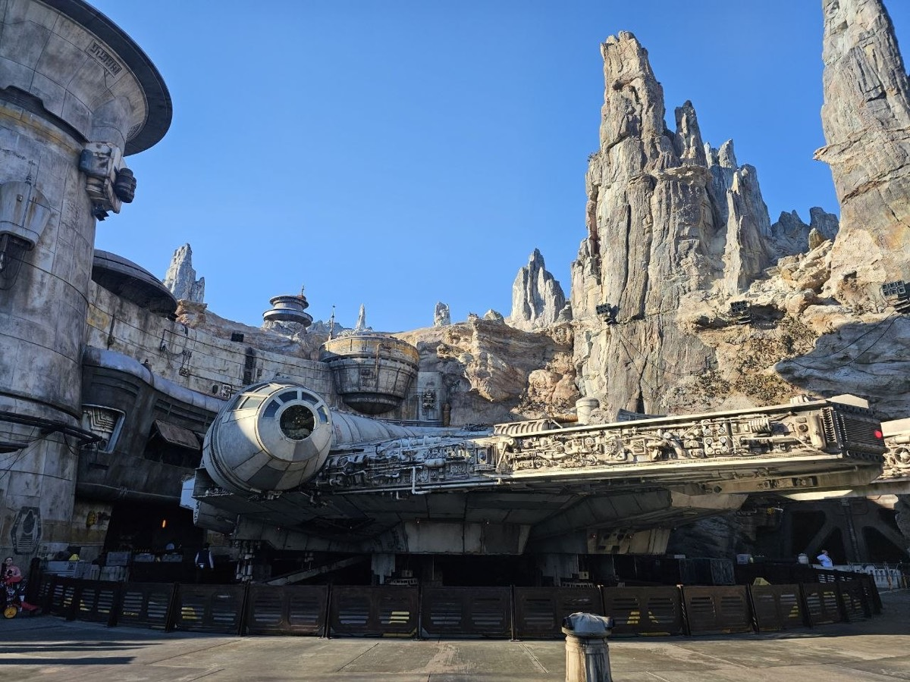
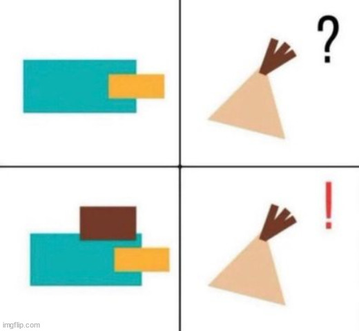
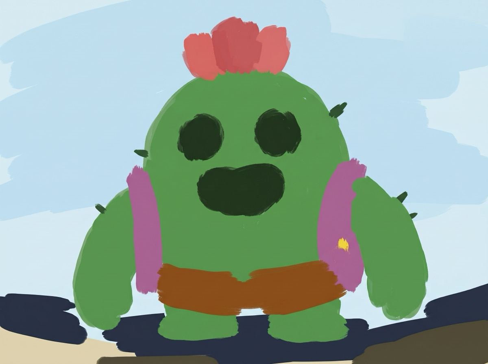
The Campanile and two photos of my own
My second photo is the Millennium Falcon at Star Wars: Galaxy's Edge, parked under the rock spires, with a lot of fine mechanical detail on the hull.
Fig. 12 · Edits with “a high quality photo”, most noise to least


What the low starting times turn each photo into, and at which time the original comes back.
A web image and two drawings
Editing works best on images that are not photos at all, since the model has to pull them onto the manifold of natural images. The web image is a meme that draws Perry the Platypus as a teal rectangle with an orange bill and Phineas as a triangle with a tuft of hair; Phineas only recognises Perry once he gets his hat. It is all flat colour and hard edges, the opposite of a photo. The two drawings are my own digital paintings in loose, flat brush strokes: Spike, the cactus from Brawl Stars, and Marina Bay Sands in Singapore. They have colour and clear shapes, but no texture, lighting or fine detail, so the model has to invent all of that.
Fig. 13 · The same sweep on a web image and two drawings


What the model reads the flat shapes and brush strokes as at each starting time.
07 · Part A 3.2
Text-guided editing
The same procedure, starting times and noise, but the prompt now describes the edit instead of asking for a generic photo. At low starting times the prompt has room to take over; at high ones the input mostly survives, and somewhere in between the result should keep the layout of the input with the content of the prompt. I picked each prompt to fit the shapes already in the image:
| Image | Prompt | Why |
|---|---|---|
| Campanile | “a photograph of a giant rocket on a launch pad” | A tall, narrow tower with a pointed top already has a rocket's outline. |
| Pixar Pier | “a spooky abandoned carnival at night in thick fog, horror movie still” | Keeps the Ferris wheel and coaster as they are and changes only the mood and light. |
| Millennium Falcon | “a LEGO diorama of a spaceship parked among rocky spires” | Same layout, different material: does the ship turn into bricks? |
Fig. 14 · Text-guided edits, most noise to least


At which starting times each prompt takes over, and which time gives the best mix of the original layout and the prompt.
08 · Part A 3.3, 3.4
Visual anagrams and hybrid images
3.3 Visual anagrams
A visual anagram is one image that shows one prompt upright and another upside down. At every Euler step, the model predicts a guided velocity for the image with the first prompt, and another for the image turned 180° with the second prompt. The second velocity is turned back and the two are averaged:
F flips both spatial axes, which is a 180° rotation, not a mirror. Rotating the noise does not change its distribution, so the model sees an ordinary noisy image in both orientations. F is its own inverse, which the notebook checks. Each step costs four network evaluations: two prompts, each with CFG. I chose pairs whose shapes can share outlines, a bowl of vegetables that can double as the features of a bearded face, and a castle on a hill whose towers could become a dragon.
def rotate180(x):
return torch.flip(x, (-2, -1)) # both axes: a rotation
def visual_anagrams(noise, condition_a, condition_b, predict_velocity, w=7, step_size=0.02):
def velocity(x, t):
v_a = cfg_velocity(x, t, condition_a, w, predict_velocity, '')
v_b = rotate180(cfg_velocity(rotate180(x), t, condition_b, w, predict_velocity, ''))
return (v_a + v_b) / 2
x, _ = euler_sample(noise, 0, step_size, velocity)
return xFig. 15 · Upright and turned 180°


How well each reading works in each orientation, and whether either pair needed another seed.
3.4 Hybrid images
Factorized diffusion builds a hybrid image like the ones in Project 2, but inside the sampler. At every step the two prompts each give a guided velocity, and the combined velocity takes the low frequencies of the first and the high frequencies of the second:
The low-pass is a Gaussian blur with σ = 16 and a 265-pixel kernel at 512 × 512. It filters the velocities, not the finished image, so the two prompts negotiate the image throughout sampling instead of being glued together at the end. The first prompt sets what you see from far away and the second the detail up close.
The prompt pairs: (prompt to be updated).
def lowpass(x, sigma=16.0): # kernel 265 at 512 x 512
kernel = 2 * round(16.5 * x.shape[-1] / 64) + 1
return gaussian_blur(x, [kernel, kernel], [sigma, sigma])
def make_hybrids(noise, condition_a, condition_b, predict_velocity, w=7, step_size=0.02):
# prompt a: low frequencies (far away); prompt b: high frequencies (up close)
def velocity(x, t):
v_a = cfg_velocity(x, t, condition_a, w, predict_velocity, '')
v_b = cfg_velocity(x, t, condition_b, w, predict_velocity, '')
return lowpass(v_a) + v_b - lowpass(v_b)
x, _ = euler_sample(noise, 0, step_size, velocity)
return xFig. 16 · Hybrid 1 · (prompt to be updated)

Fig. 17 · Hybrid 2 · (prompt to be updated)

Each hybrid is one 512 × 512 image, shown three times at shrinking sizes to stand in for stepping back from it. The notebook's own distant view is a 64 × 64 copy, close to the size of the smallest one here.
How each hybrid reads up close, and at what size the distant prompt takes over.
09 · Part A bells and whistles
More anagrams and a course logo
Two more views
The visual anagrams paper (Geng, Park and Owens, 2024) shows that the 180° flip is one case of a general rule: any view that is an orthogonal transformation of the pixels works, which includes every permutation of pixels and every sign flip. If A is orthogonal, then
so the transformed image is an ordinary noisy image, at the same time t, of the clean image Ax₁, the kind of input the model saw in training. And because A is linear, a velocity predicted for Ax_t becomes a velocity for x_t when mapped back with A⁻¹, so the two can be averaged as before:
I generalised visual_anagrams into anagram_view, which takes a view and its inverse, and picked two views:
- Rotation by 90°. torch.rot90(x, 1, (−2, −1)) turns the image a quarter turn counter-clockwise, a permutation of the pixels. Its inverse is a quarter turn the other way, and the notebook checks that the two undo each other. Prompt pair: (prompt to be updated).
- Negation. In [−1, 1] pixel space, x → −x is colour inversion, a photographic negative. It is −I, which is orthogonal and its own inverse, and it maps Gaussian noise to Gaussian noise. Prompt pair: (prompt to be updated).
def anagram_view(noise, condition_a, condition_b, view, inverse_view,
predict_velocity, w=7, step_size=0.02):
def velocity(x, t):
v_a = cfg_velocity(x, t, condition_a, w, predict_velocity, '')
v_b = inverse_view(cfg_velocity(view(x), t, condition_b, w, predict_velocity, ''))
return (v_a + v_b) / 2
x, _ = euler_sample(noise, 0, step_size, velocity)
return x
def rotate90(x): return torch.rot90(x, 1, (-2, -1))
def rotate270(x): return torch.rot90(x, -1, (-2, -1))
def negate(x): return -x # its own inverse
VIEWS = {"rotate90": (rotate90, rotate270), "negate": (negate, negate)}Fig. 18 · A quarter turn and a negative


How convincing each view is, and how the two compare with the 180° anagrams.
A course logo
For the logo I used text-guided editing from 3.2 on the Campanile, with the prompt “a minimalist flat vector logo of a clock tower inside a camera lens, blue and gold”, at the same seven starting times. The Campanile stands for Berkeley, blue and gold are its colours, and the lens stands for the photography half of the course. Flat vector art is far from a photo, so I expected the low starting times to give the cleanest logo and the high ones to stay too close to the photograph.
Fig. 19 · The Campanile edited toward a logo
Which starting time gives the best logo, and why.
10 · Part B 1.1, 1.2
A one-step denoising UNet
Part B trains everything from scratch on MNIST, with pixels in [0, 1]. The warm-up is a plain denoiser D_θ that maps a noisy digit z straight back to the clean digit x, trained with an L2 loss:
1.1 The UNet
The UNet halves the 28 × 28 input twice to 7 × 7, averages that down to a single 1 × 1 vector, and expands it back, concatenating each upsampled tensor with the encoder tensor of the same size. It is built from a few small blocks:
| Block | Layers | Effect |
|---|---|---|
| Conv | Conv2d 3×3, stride 1, pad 1 → BatchNorm → GELU | changes channels only |
| DownConv | Conv2d 3×3, stride 2, pad 1 → BatchNorm → GELU | halves height and width |
| UpConv | ConvTranspose2d 4×4, stride 2, pad 1 → BatchNorm → GELU | doubles height and width |
| Flatten | AvgPool2d 7 → GELU | 7 × 7 → 1 × 1 |
| Unflatten | ConvTranspose2d 7×7, stride 7 → BatchNorm → GELU | 1 × 1 → 7 × 7 |
| ConvBlock | Conv → Conv | deeper, same shape |
| DownBlock, UpBlock | DownConv or UpConv → ConvBlock | resample, then refine |
class UnconditionalUNet(nn.Module):
def __init__(self, in_channels, num_hiddens):
super().__init__()
D = num_hiddens
self.in_block = ConvBlock(in_channels, D) # D x 28 x 28
self.down1 = DownBlock(D, D) # D x 14 x 14
self.down2 = DownBlock(D, 2 * D) # 2D x 7 x 7
self.flatten = Flatten() # 2D x 1 x 1
self.unflatten = Unflatten(2 * D) # 2D x 7 x 7
self.up1 = UpBlock(4 * D, D) # D x 14 x 14
self.up2 = UpBlock(2 * D, D) # D x 28 x 28
self.out_block = ConvBlock(2 * D, D)
self.out_conv = nn.Conv2d(D, in_channels, 3, 1, 1)
def forward(self, x):
x0 = self.in_block(x)
d1 = self.down1(x0)
d2 = self.down2(d1)
u0 = self.unflatten(self.flatten(d2))
u1 = self.up1(torch.cat([d2, u0], dim=1))
u2 = self.up2(torch.cat([d1, u1], dim=1))
return self.out_conv(self.out_block(torch.cat([x0, u2], dim=1)))1.2 The noising process
Four test digits, each with one fixed noise sample (seed 180) scaled by σ = 0, 0.2, 0.4, 0.5, 0.6, 0.8 and 1.0.
Fig. 20 · z = x + σε for increasing σ
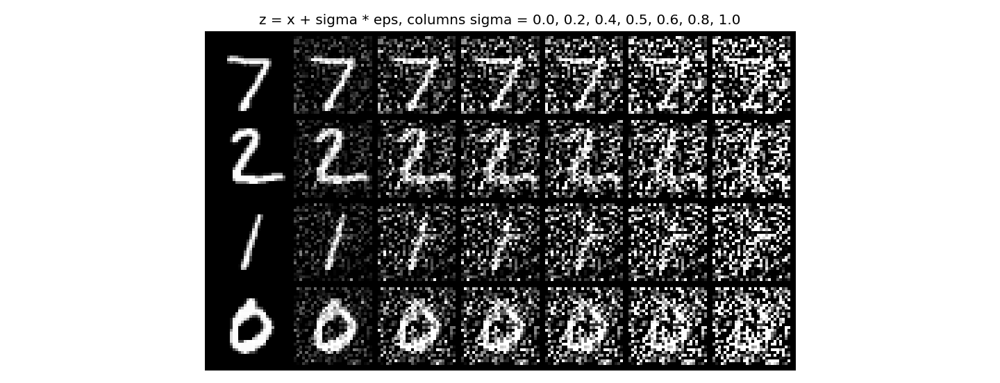
1.2.1 Training
σ = 0.5, hidden dimension D = 128, Adam at a learning rate of 1e-4, batch size 256, and 5 epochs over the 60,000 shuffled training digits, which is 235 steps per epoch and 1,175 in all. The noise is drawn fresh for every batch, so the network never sees the same noisy digit twice. For the figures I fixed eight test digits and one noise sample, so epochs 1 and 5 are directly comparable. The loss curve shows every optimizer step (faint) with a 100-step moving average on top.
for images, _ in train_loader:
images = images.to(device)
noisy_images = images + noise_level * torch.randn_like(images) # new noise every batch
loss = criterion(model(noisy_images), images) # nn.MSELoss
optimizer.zero_grad(); loss.backward(); optimizer.step()Fig. 21 · Training loss, σ = 0.5
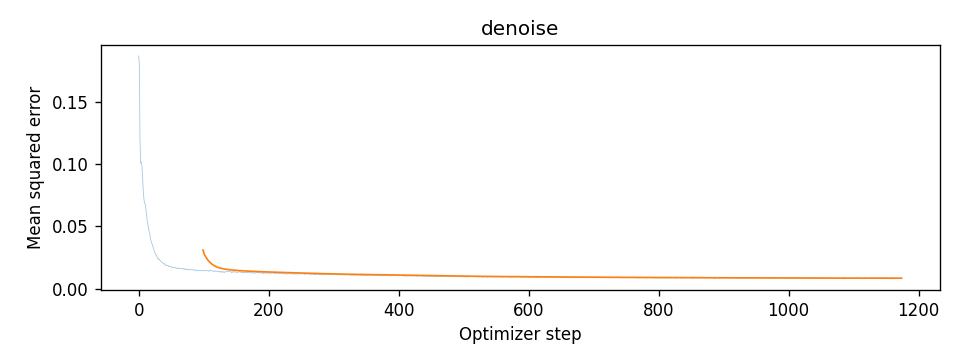
Fig. 22 · Held-out digits after epochs 1 and 5
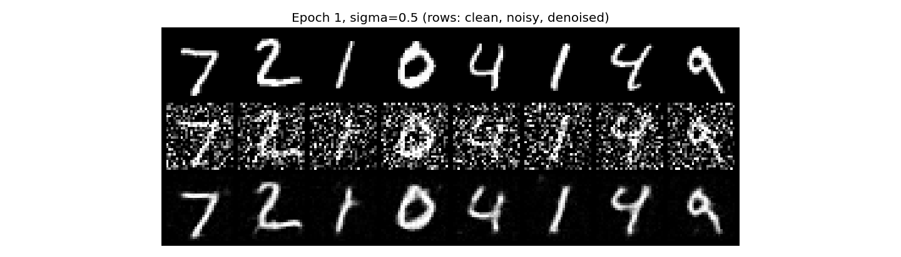
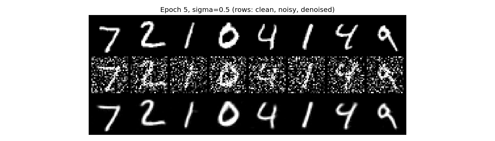
The loss falls from about 0.19 to under 0.02 within the first 50 or so steps, then creeps down for the rest of training. Averaged over the last 100 steps it ends at 0.0083.
After one epoch the denoiser already recovers every digit, but the strokes are soft and a faint grey speckle is left in the background. After five the background is clean black and the strokes are sharper and closer to the clean row, though still a little blurrier than it, which is what an MSE loss does when it cannot tell exactly where an edge was. The noise can also leave a trace in the digit itself: in the third column it drew a crossbar on the 1, and both epochs keep a small stub there.
11 · Part B 1.2.2, 1.2.3
Unseen noise levels and pure noise
1.2.2 Out-of-distribution testing
The denoiser only ever saw σ = 0.5. Here the trained model gets three test digits, each with one fixed noise sample, and only σ changes, from 0 to 1.
Fig. 23 · One digit, one noise sample, seven noise levels
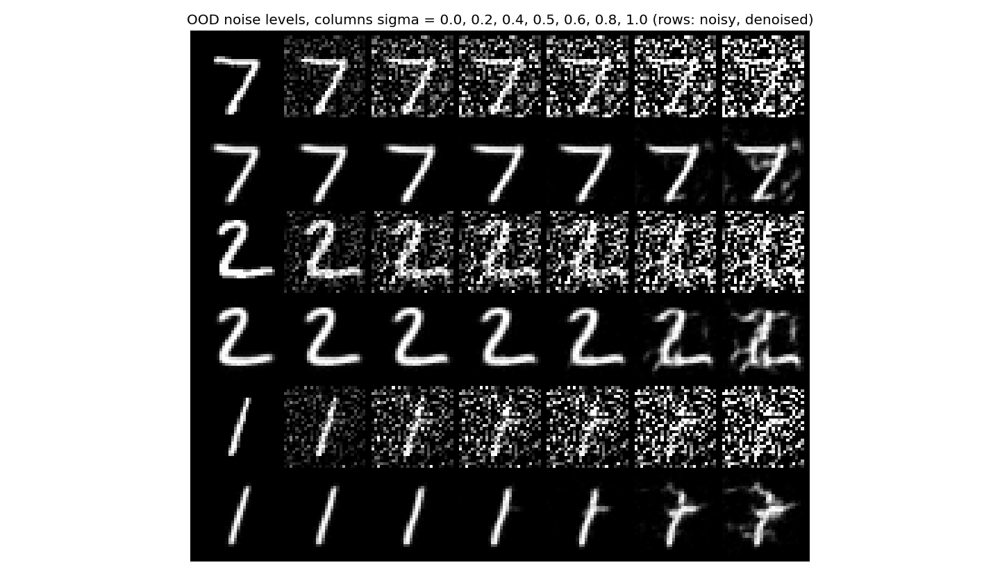
Up to σ = 0.5 the outputs are clean and almost identical to each other, and at σ = 0 the denoiser leaves the digit alone. At 0.6 the first artefact appears: the 1 grows a short horizontal tick. At 0.8 and 1.0 the denoiser starts to read clumps of noise as strokes. The 7 picks up extra marks across its middle, the 2 gets vertical blobs through it, and the 1 turns into something closer to a crossed 7. It only learned how much noise to expect at σ = 0.5, so above that it keeps part of the noise as if it were ink.
1.2.3 Denoising pure noise
To make the denoiser generate, I trained a fresh D = 128 UNet with the same settings, but with pure Gaussian noise as the input and a random training digit as the target. The input now says nothing about which digit it should become. For the figures I fixed 16 noise inputs (seed 181).
Fig. 24 · Training loss on pure noise
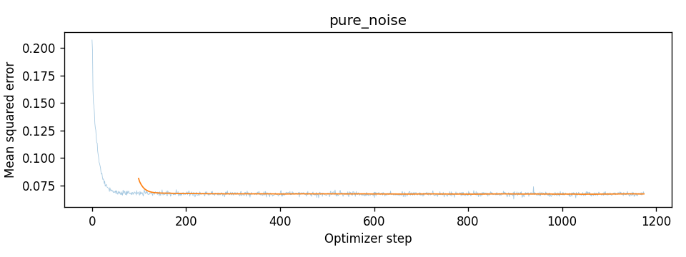
Fig. 25 · Outputs from pure noise after epochs 1 and 5
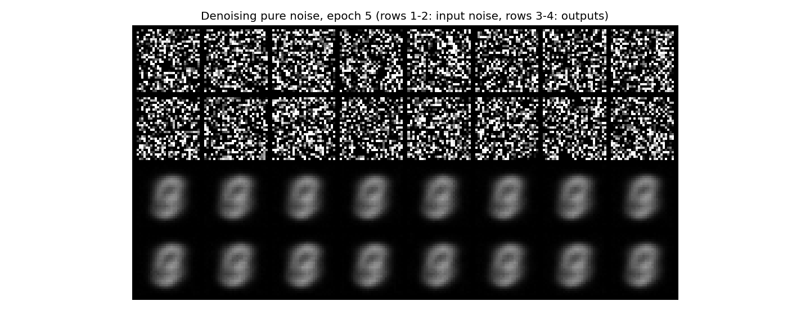
Why this cannot work: with an MSE loss, the best output for a given input is the average of all the targets that come with that input. Here the input is independent of the target, so every noise image comes with every digit, and the best output is the same for all of them: the pixel-wise mean of the training set, which is a blurry overlay of all ten digits. It is the centroid of the data, the single image closest on average to every training digit. That mean is plotted above for comparison.
That is exactly what happened. The loss drops to about 0.07 within the first 50 or so steps and then stays flat (0.067 over the last 100 steps, against 0.0083 for the σ = 0.5 denoiser). All 16 outputs are the same image whatever noise goes in: a blurry grey blob that looks like several digits laid on top of each other, most clearly a 0 and a 9. After one epoch it is slightly grainy; after five it is smooth and very close to the mean of the training set shown above. The model has learned to ignore its input and output the centroid of the data.
12 · Part B 2.1–2.3
Time-conditioned flow matching
One step from noise collapses to the mean, so instead the model learns to move noise toward data a little at a time. With the same straight path as Part A, the flow at every point is the constant velocity x₁ − x₀, and a UNet that also knows t learns to predict it:
2.1 Adding time to the UNet
An FCBlock is Linear → GELU → Linear. The scalar t, already in [0, 1], goes through two of them. The first gives a 2D-vector that scales the unflattened 7 × 7 tensor channel by channel; the second gives a D-vector that scales the output of up1.
class FCBlock(nn.Module):
def __init__(self, in_channels, out_channels):
super().__init__()
self.net = nn.Sequential(nn.Linear(in_channels, out_channels), nn.GELU(),
nn.Linear(out_channels, out_channels))
# in TimeConditionalUNet: self.fc1_t = FCBlock(1, 2 * D); self.fc2_t = FCBlock(1, D)
def forward(self, x, t):
t = t.view(-1, 1).float()
t1 = self.fc1_t(t)[:, :, None, None]
t2 = self.fc2_t(t)[:, :, None, None]
x0 = self.in_block(x)
d1 = self.down1(x0)
d2 = self.down2(d1)
u0 = self.unflatten(self.flatten(d2)) * t1 # modulated unflatten
u1 = self.up1(torch.cat([d2, u0], dim=1)) * t2 # modulated up1
u2 = self.up2(torch.cat([d1, u1], dim=1))
return self.out_conv(self.out_block(torch.cat([x0, u2], dim=1)))2.2 Training
D = 64, batch size 64, and Adam starting at a learning rate of 1e-2 with an exponential decay of γ = 0.11/10, stepped once per epoch, so the learning rate falls tenfold to 1e-3 over the 10 epochs (938 steps each). Every image in a batch gets fresh noise and its own t ~ U[0, 1].
def time_fm_forward(unet, x_1, num_ts):
x_0 = torch.randn_like(x_1)
t = torch.rand(x_1.shape[0], device=x_1.device) # one t per image
t_ = t.view(-1, 1, 1, 1)
x_t = (1 - t_) * x_0 + t_ * x_1
return F.mse_loss(unet(x_t, t), x_1 - x_0)Fig. 26 · Training loss, time-conditioned UNet
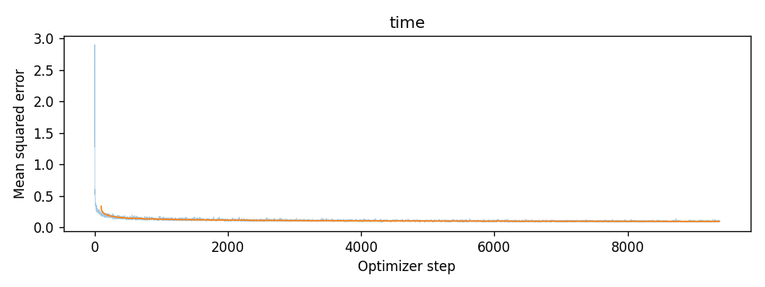
2.3 Sampling
Sampling starts from Gaussian noise (seed 180) and takes 50 Euler steps from t = 0 to 1. I sampled 40 digits from the checkpoints after epochs 1, 5 and 10, all from the same starting noise.
@torch.inference_mode()
def time_fm_sample(unet, img_wh, num_ts, seed=0, num_samples=40):
x = torch.randn((num_samples, unet.in_channels, *img_wh),
generator=torch.Generator().manual_seed(seed)).to(device)
for i in range(num_ts):
t = torch.full((num_samples,), i / num_ts, device=device)
x = x + unet(x, t) / num_ts # Euler step, h = 1 / num_ts
return xFig. 27 · Forty samples after epochs 1, 5 and 10
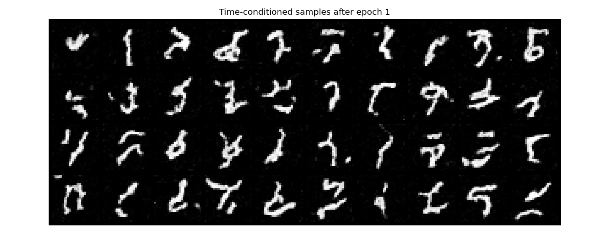
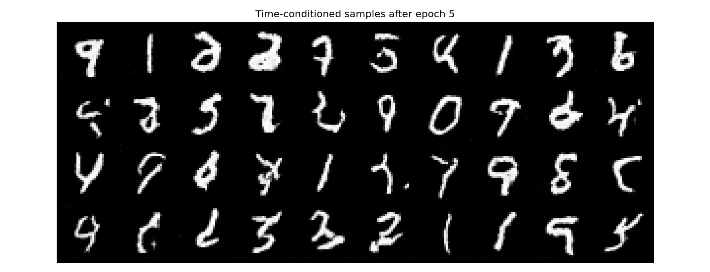
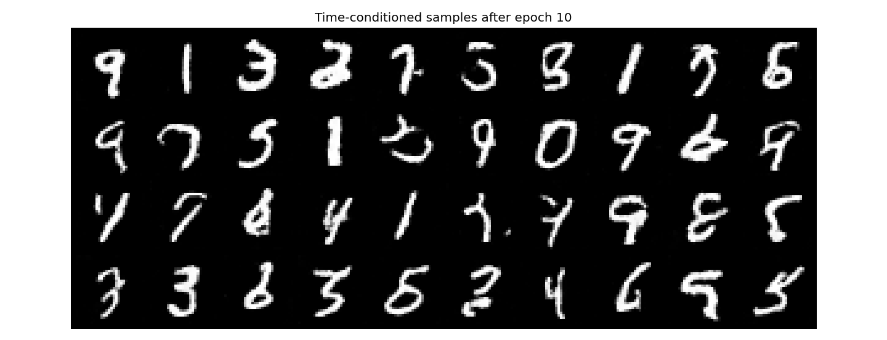
The loss starts near 2.9, falls below 0.5 within a few hundred steps and ends at 0.094 (last 100 steps). It cannot reach zero, because the same xt can come from many pairs of noise and digit, and the best the model can do is predict their average velocity.
After one epoch the samples are white strokes of the right thickness in the right place, but mostly not digits yet: hooks, squiggles and broken pieces, with a few 1s. By epoch 5 most are recognisable, and by epoch 10 most of the 40 are legible, with smoother strokes and less grain. Because every grid starts from the same noise, the same cell usually becomes the same digit at epochs 5 and 10, like the 9 in the top-left corner and the 0 in the second row. A handful never become digits: the squiggle in the middle of the second row, the broken stroke with a dot in the third row, and a few cells that sit between a 4, a 7 and a 9.
13 · Part B 2.4–2.6
Class-conditioned flow matching
2.4 Adding the class
The digit class enters as a one-hot vector c through two more FCBlocks, and now each modulation scales by the class and shifts by the time: unflatten ← c₁ · unflatten + t₁ and up1 ← c₂ · up1 + t₂. For classifier-free guidance the same network also has to work without a class, so during training the one-hot vector is replaced by zeros 10% of the time (p_uncond = 0.1).
# in ClassConditionalUNet.forward
c = F.one_hot(c, self.num_classes).float()
if mask is not None:
c = c * mask.view(-1, 1).float() # zero vector = no class
t1, c1 = self.fc1_t(t)[:, :, None, None], self.fc1_c(c)[:, :, None, None]
t2, c2 = self.fc2_t(t)[:, :, None, None], self.fc2_c(c)[:, :, None, None]
u0 = c1 * self.unflatten(self.flatten(d2)) + t1
u1 = c2 * self.up1(torch.cat([d2, u0], dim=1)) + t2
# in class_fm_forward: keep the class with probability 0.9
mask = (torch.rand(x_1.shape[0], device=x_1.device) >= p_uncond).float()
return F.mse_loss(unet(x_t, c, t, mask), x_1 - x_0)2.5 Training
The same recipe as 2.2: D = 64, batch size 64, Adam from 1e-2 with the same exponential decay, 10 epochs.
Fig. 28 · Training loss, class-conditioned UNet
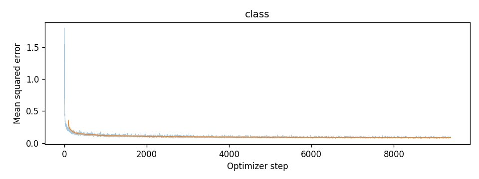
2.6 Sampling with guidance
Each of 300 Euler steps evaluates the network with and without the class and combines them with a guidance scale of γ = 5:
for i in range(num_ts): # num_ts = 300
t = torch.full((n,), i / num_ts, device=device)
u_uncond = unet(x, c, t, uncond_mask) # mask of zeros
u_cond = unet(x, c, t, cond_mask) # mask of ones
x = x + (u_uncond + guidance_scale * (u_cond - u_uncond)) / num_tsThe grids show four of each digit, laid out so that column k is digit k, from the same starting noise (seed 180) at every checkpoint.
Fig. 29 · Four of each digit after epochs 1, 5 and 10
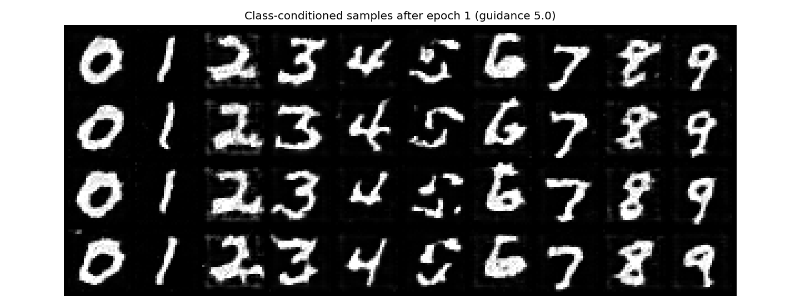
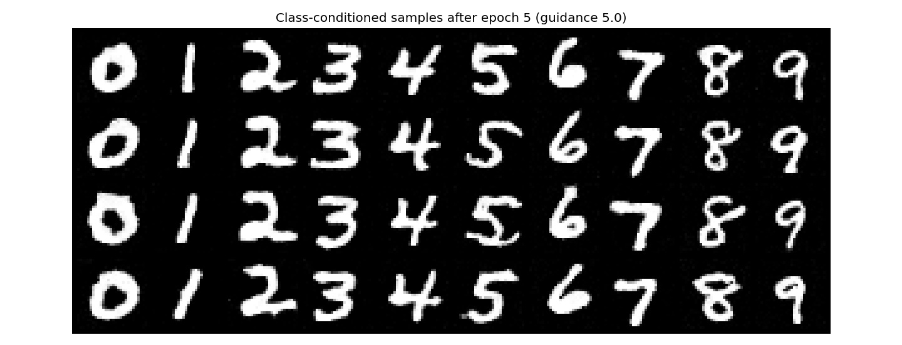
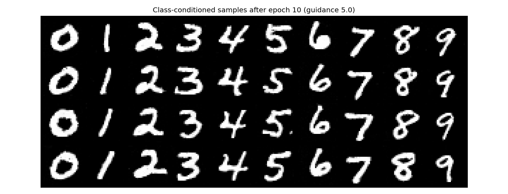
After one epoch every sample is already a legible digit of the right class, a level the time-only model did not reach even after ten epochs. Knowing the class does most of the work. The strokes are still thick and blotchy, the 5s are broken into pieces, and a faint grey square shows around each digit. By epoch 5 all 40 are clean digits of the right class, and epoch 10 mostly tidies edges; the shapes barely change, since the starting noise is the same. The four copies of each digit still differ in slant, width and stroke weight, so guidance at γ = 5 has not collapsed them into one template. The only flaw I can find at epoch 10 is a stray dot beside the 5 in the third row. The final loss is 0.085, below the time-only model's 0.094 with the same training budget.
Without the learning rate scheduler
The scheduler takes the learning rate from 1e-2 down to 1e-3. A large rate makes fast progress early; the small one at the end lets the weights settle instead of bouncing around the minimum. To remove the scheduler, I trained an identical model (same seed, so the same initial weights and the same batch order) at a constant learning rate of 1e-3, the value the schedule ends at. That gives up some of the fast early progress in exchange for a rate that is already small enough to converge, over the same 10 epochs.
NO_SCHEDULER_LR = 1e-3 # the schedule's final lr
torch.manual_seed(SEED) # same initialization
nosched_fm = ClassConditionalFM(ClassConditionalUNet(1, 10, 64).to(device), num_ts=300, p_uncond=0.1)
train_flow(nosched_fm, num_epochs=10, lr=NO_SCHEDULER_LR, name='class_no_scheduler',
use_scheduler=False, conditional=True)Fig. 30 · Constant learning rate, no scheduler
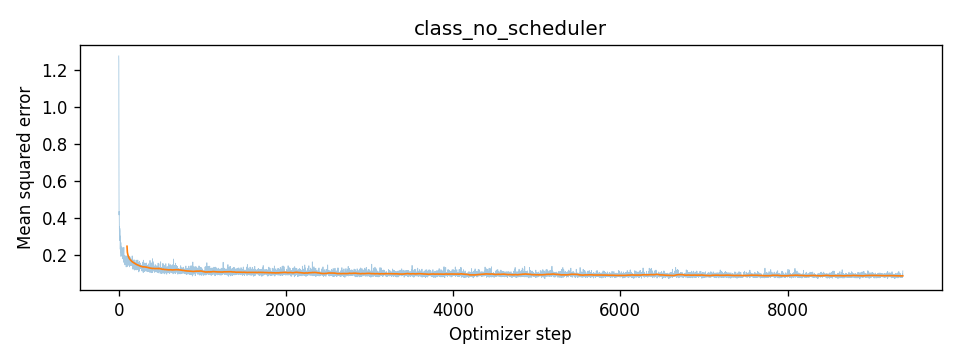
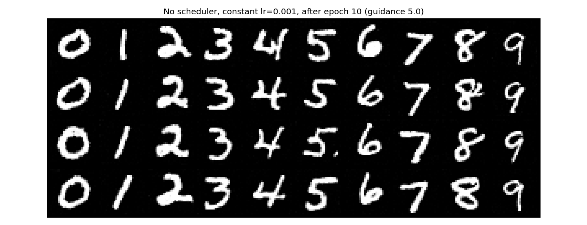
The constant learning rate works. The final loss is 0.0856 against 0.0849 with the scheduler, less than 1% higher, and the curve has the same shape. After 10 epochs all 40 samples are the right digit and look almost the same as the scheduled run in Fig. 29, since both start from the same weights and the same noise. The differences are small: a few strokes are rougher, the 4 in the top row has a doubled stroke and the 8 in the second row a stray tail, and the stray dot beside the third-row 5 appears here too. For this model and 10 epochs, a constant 1e-3 is enough to replace the schedule.
14 · Part B bells and whistles
A better time-only UNet
The class-conditioned model shows how much room the time-only UNet from 12 has left. I changed three things:
- Wider: D = 128 instead of 64, which roughly quadruples the parameters in the convolutions.
- Longer: 20 epochs instead of 10. The exponential decay is stretched over the 20 epochs, γ = 0.11/20, so it still ends at 1e-3.
- Finer sampling: 300 Euler steps instead of 50.
The sampler change alone could explain part of any improvement, so I also sampled the original model from 2.2 with 300 steps. All three grids start from the same noise (seed 180), so they can be compared digit by digit with Fig. 27.
torch.manual_seed(SEED)
better_time_fm = TimeConditionalFM(TimeConditionalUNet(1, 10, 128).to(device), num_ts=300)
train_flow(better_time_fm, num_epochs=20, lr=1e-2, name='time_better')
# ablation: the 2.2 model (D = 64, 10 epochs) with 300 steps
time_fm_sample(time_fm.unet, (28, 28), 300, seed=SEED)Fig. 31 · Training loss, D = 128 over 20 epochs
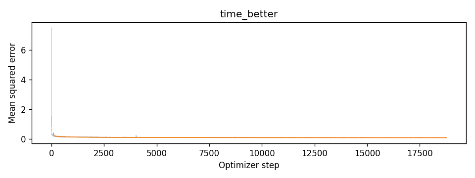
Fig. 32 · Separating the sampler from the model
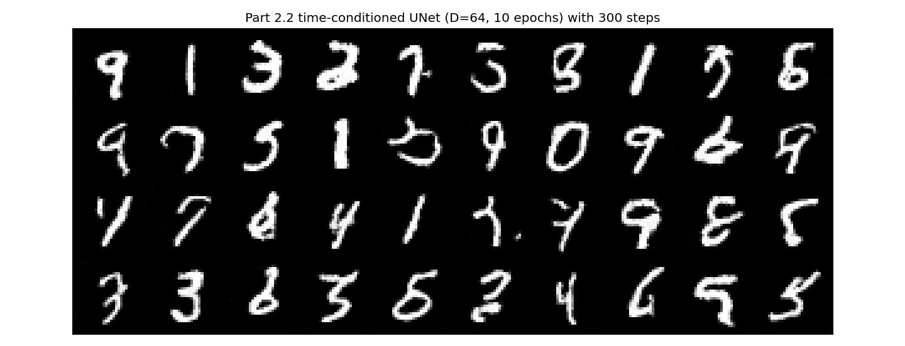
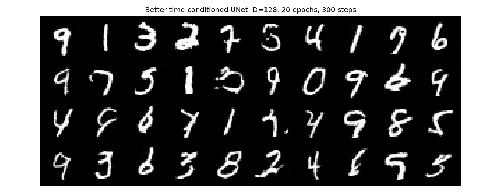
The sampler was not the bottleneck. The 2.2 model with 300 steps (first grid) is almost indistinguishable from its 50-step samples in Fig. 27, so the learned flow is close to straight and 50 Euler steps already follow it well.
The wider, longer-trained model does help, but modestly. Several ambiguous cells become clear digits: the B-shaped 8 in the top row becomes a 4, the looped 7 near the end of the top row becomes a 9, and the y-shape that starts the third row becomes a 4. Strokes are a little smoother overall. But the squiggle in the second row and the broken stroke in the third row are still not digits, the 6 near the end of the bottom row got worse, and the grid is still well short of the class-conditioned samples. The loss curve has one brief spike around step 4,000 and recovers. So nearly all of the gain comes from the bigger model and longer training rather than the sampler, and conditioning on the class matters far more than either.
15
What I learned
Written once all the results are in.